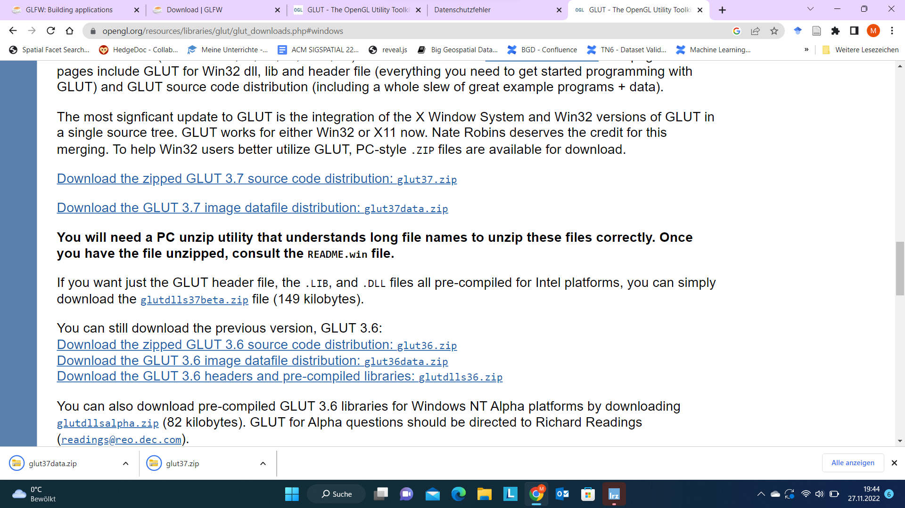
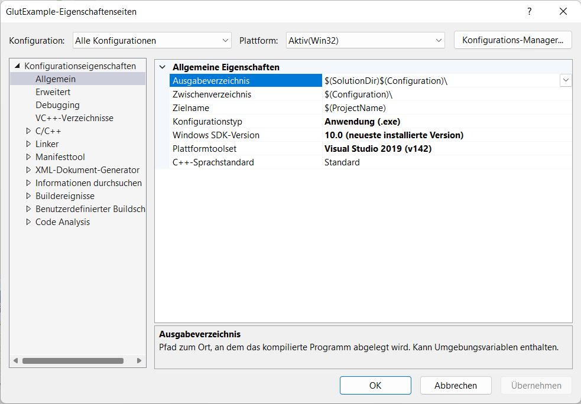
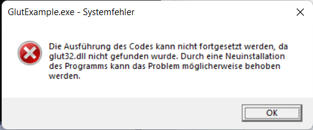
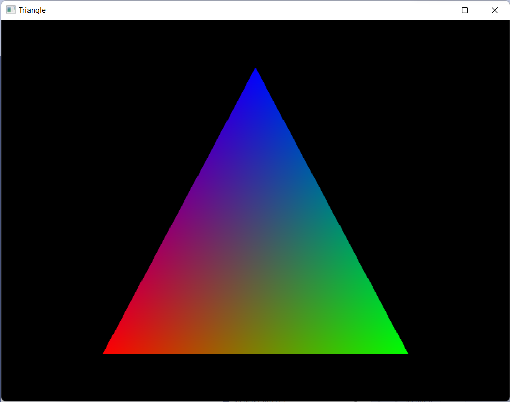
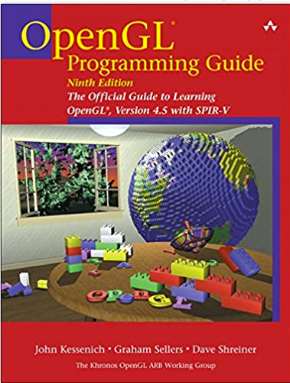

OpenGL - The Core Computer Graphics API
Contents
OpenGL - The Core Computer Graphics API#
Though I would today not recommend using glut or even using DirectX, OpenGL, or Vulkan directly, some experience is helpful when working with realtime 3D graphics on higher levels. For now, we will be using glut as it provides the traditional API-based OpenGL model still and is portable between Linux and Windows, hence runs on all our target systems easily.
If you ask me for the current library to go to for reasonably working with modern OpenGL, I would point you to glfw for API management and glad for extension management. Google these two terms, but be warned: there is typically no classical rendering anymore, but everything is done in terms of matrices, vertex shaders, fragment shaders and the like. This might require a lot of background knowledge on rendering pipelines and modern OpenGL. Find a long and detailed tutorial and invest some time, if you want.
Installing GLUT (Windows Example)#

With GLUT 3.7, glut for Windows and glut for Linux have been merged. Download two ZIP files from opengl.org (see screenshot) and compile them.
Or you just download (Intel platforms only) the provided binary distribution glutdlls37beta (recommended as building glut is tricky).
I will assume you have this file. It contains only a few files (uncompress it somewhere, but remember where).
Installing GLUT (Linux)#
In this lecture, we only support Debian-based distributions (including Ubuntu). In all of these
apt-get install freeglut
should be sufficient. However, it might be a bit tricky to set up OpenGL and hardware accelleartion correctly.
Our first project (Visual Studio)#
First, create a new C++ console project.
Create a first integration test C++ file calling a single glut function:
/*
This mini-program accesses the glut header and tries to initialize glut.
It serves as a test that your project has been set up correctly.
*/
#include <glut.h>
int main(int argc, char **argv)
{
glutInit(&argc, argv);
return 0;
}
Compilation is expected to fail on this one. We did not yet tell the compilers where to look for the file glut.h. In Visual Studio, open the project properties. This brings a dialog looking (except translation) like this:

Be careful: Visual Studio can have different settings for all platforms and configurations (e.g., Debug, Release, etc.). But for now, we want to change all platforms at once. Hence, make sure that in the top line there is all configurations (like in mine) but as well all platforms selected.
Then Open the C++ tab and find Additional Include Directories (for me it is on top of General). As I was putting it into my Documents folder and my account is named marti, I had to write C:\Users\marti\Documents\glut\glutdlls37beta into this line.
If you did it right and you compile, you will see different errors now: only linker errors left. This can be seen as the error message starts with LINK:
For me, it tells me that it would like to find a file called glut32.lib. Let us tell the system where this one is. Open the preferences again, remember to edit all configurations at once. You can use ALT-F7 as a shortcut typically.
The second group of options is named linker and there we will most likely be able to add the library directory. In the general tab somehow in the middle, there is Additional Library Directories. Point to the lib subdirectory of your decompressed binary distributed library, for me C:\Users\marti\Documents\glut\glutdlls37beta.
Now be patient, if this compiles, you are done and there is nothing tricky coming. Keep trying. Do you have the right files? Did you point the compiler and header to find the right files?
A Reasonable Example#
Now, just replace the source code with the following exapmle taken from Stanford CS248. It should compile and run and maybe you see something…
#include <glut.h>
void display() {
glClear(GL_COLOR_BUFFER_BIT);
glBegin(GL_POLYGON);
glColor3f(1, 0, 0); glVertex3f(-0.6, -0.75, 0.5);
glColor3f(0, 1, 0); glVertex3f(0.6, -0.75, 0);
glColor3f(0, 0, 1); glVertex3f(0, 0.75, 0);
glEnd();
glFlush();
}
int main(int argc, char** argv) {
glutInit(&argc, argv);
glutInitDisplayMode(GLUT_SINGLE | GLUT_RGB);
glutInitWindowSize(800,600);
glutCreateWindow("Triangle");
glutDisplayFunc(display);
glutMainLoop();
return 0;
}
When I run this code, however, it does not work: It shows a messagebox like this: 
which translates essentially to that the file glut32.dll could not be found. During runtime, you must ensure that the dynamic parts of your libraries are available. Fortunately, the file glut32.dll is available in the binary distribution and we can copy it into both the Release and Debug folder of our project. When you distirbute your executable to friends, remember to put this file into the same directory as the .exe file. To do this, you can open the folder of your project by right-clicking the project in the left navigator bar and clicking “Open in File Browser”.
When you copied the DLL to the folder of your release, the program will finally run and show a triangle with three different colors and color interpolation for the surface of the triangle.

Now we can start writing more fancy visualizations, for example, some of our turtle graphics can be definitely ported to OpenGL. Note that OpenGL immediately supports 3D, so there is now a lot we can do.
Further Reading#
OpenGL is a complex library and the history of OpenGL is full of advice that is just not correct today. Hence, it is difficult for novice users to navigate Internet resources. Some of them are very good, but outdated, others are very bad, but state-of-the-art, and finally, video tutorials on Youtube steal your time as it is just not working on your computer as it does on the presenters computer.

Though it is nearly 1,000 pages, it is always fun to read.